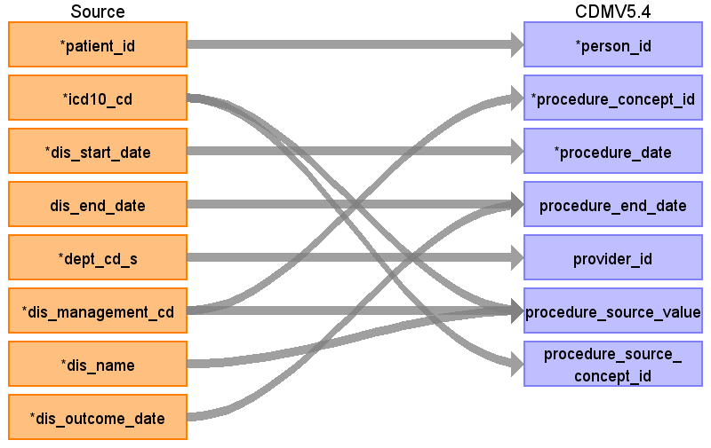

ターゲットテーブル:procedure_occurrence
・当テーブルは PatientDisease、ObservationResult、PrescriptionData、InjectionData からデータが登録される。
・各テーブルの 病名、検査値、薬剤名などを ATHENA Vocabularyを介したstandard conceptへの変換後、standard conceptのdomainが "Procedure" で定義されているデータが格納される。
例：「ICD10 / Z10.0: 職場健診」 → 「OMOP コンセプト ID / 45581006: Occupational health examination」
（注：本データソース側には「診療行為」を格納しているエンティティが存在しない。このため、各施設で発生したすべての診療行為が登録されるわけではない。）
本項では、PatientDiseaseをもとに生成された、procedure_occurrenceテーブルの各項目のとの出力結果の対応を記載する。

| Destination Field | Source field | Logic | Comment field |
|---|---|---|---|
| procedure_occurrence_id | 一意の連番を設定する | ||
| person_id | patient_id | ||
| procedure_concept_id | dis_management_cd | ||
| procedure_date | dis_start_date | ||
| procedure_datetime | （設定しない） | ||
| procedure_end_date | dis_end_date dis_outcome_date |
COALESCE( -- OUTCOME_DATEを優先、なければEND_DATEを使用 ただし9999-12-31はNULLに変換する
NULLIF(sch_dis_outcome_date, '9999-12-31'::date), NULLIF(sch_dis_end_date, '9999-12-31'::date) ) AS end_date |
OUTCOME_DATEを優先、なければEND_DATEを使用 ただし9999-12-31はNULLに変換する |
| procedure_end_datetime | （設定しない） | ||
| procedure_type_concept_id | 32817（EHR）固定とする | ||
| modifier_concept_id | （設定しない） | ||
| quantity | （設定しない） | ||
| provider_id | dept_cd_s | 当該標準診療科コードを示すprovider_idを取得して登録する | |
| visit_occurrence_id | （設定しない） | ||
| visit_detail_id | （設定しない） | ||
| procedure_source_value | dis_management_cd icd10_cd dis_name |
COALESCE(icd10_cd, '') || '|' || COALESCE(dis_management_cd, '') || '|' || COALESCE(dis_name, '') |
ICD10コード|病名管理番号|病名表記の形式に編集して判読可能な値として登録する |
| procedure_source_concept_id | icd10_cd | Source_to_concept_map:
VocabID:RINCHU_DIAGCD, ATHENA_ICD10 DomainID:Procedure |
ICD10コードをAthenaのconceptを介してconcept_idに変換する |
| modifier_source_value | （設定しない） |